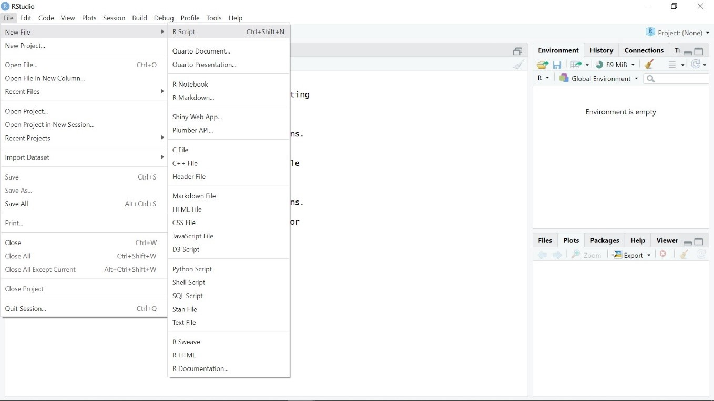
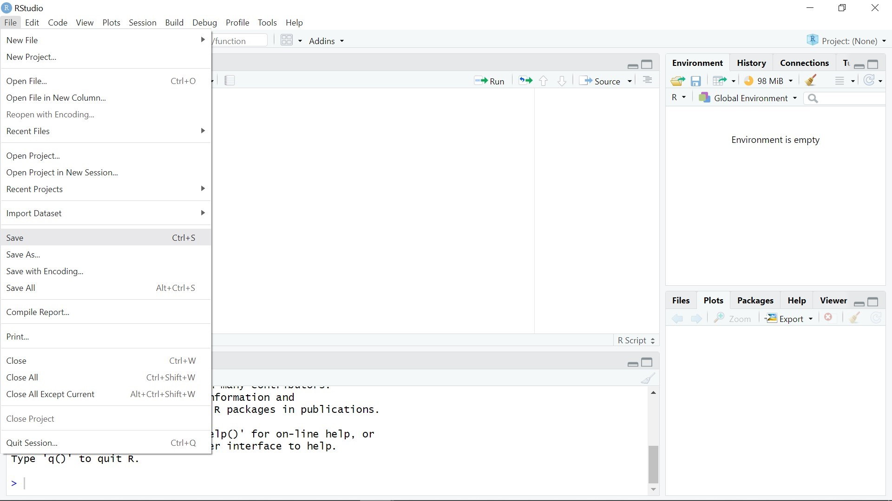
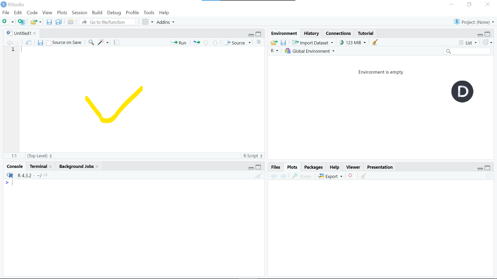
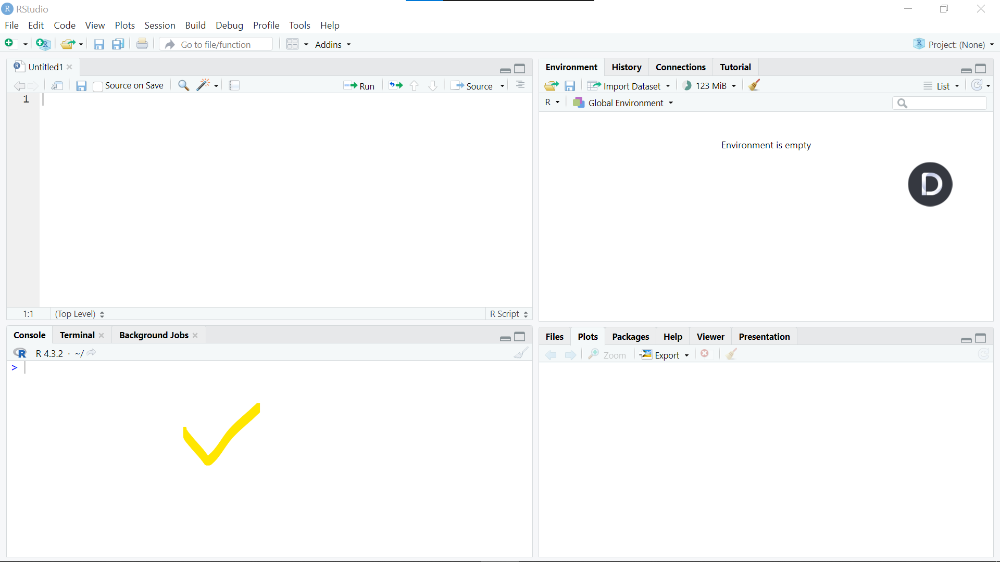
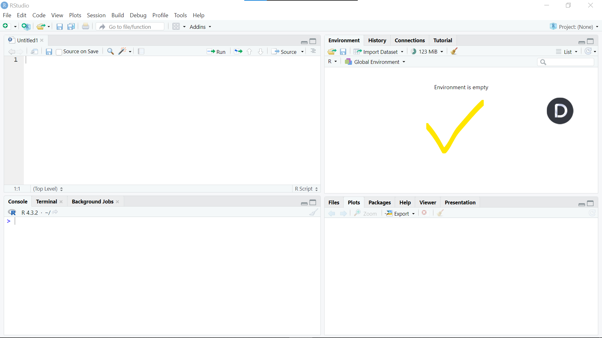
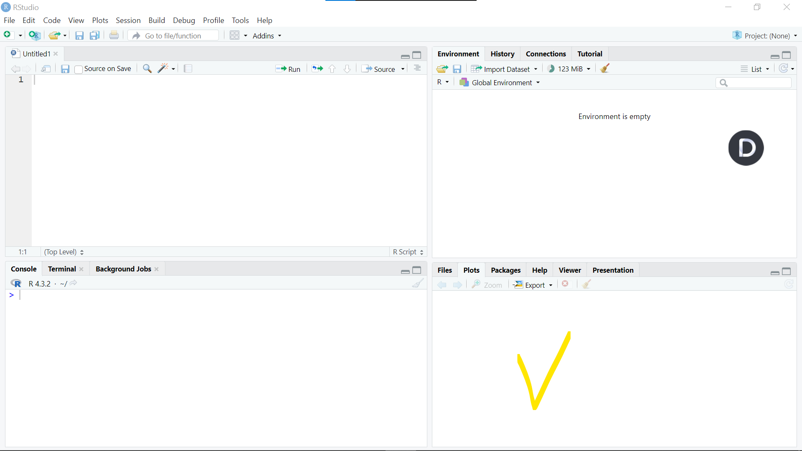

# Load required libraries
library(ggplot2)
library(tidyverse)Creating a new R Script
Aim:
Understanding how to create and save a new R script file in RStudio.
Go to file > New file > R Script

Save your R script in the folder of desired directory 
Understanding R Panes
Aim:
Familiarize yourself with the different panes in RStudio and their respective functionalities.
The Script Pane is where you write and edit your R code. It’s essentially your coding workspace. Here, you can create new scripts, open existing ones, and write or edit R code to perform various tasks like data manipulation, analysis, and visualization.

Here, you can execute temporary code snippets. The Console Pane is where R executes your code and displays the output. When you run code from the Script Pane, the results, errors, and messages are displayed in the Console Pane. It’s an interactive interface where you can directly interact with R, execute commands, and see immediate results. 
The Environment Pane provides a snapshot of your current R environment. It displays information about the objects (variables, functions, data frames) that are currently loaded into your R session. You can see the names, types, dimensions, and values of these objects. This pane is particularly useful for inspecting and managing your workspace during data analysis.

This pane serves multiple purposes:
Plots: When you create plots in R, they are displayed in the Plots Pane. You can interact with the plots, zoom in/out, save them, or export them as images.
Files: The Files Pane provides a file browser within RStudio. You can navigate through your directory structure, open files, create new ones, and manage your project files directly from this pane.
Viewer: The Viewer Pane displays HTML content generated by R, such as R Markdown documents, Shiny applications, or HTML visualizations. It allows you to preview these documents within RStudio.

Managing Libraries
Aim:
Learn how to load and manage libraries for additional functionalities in R.
Ensure to call out libraries responsible for the task aimed to achieve. for visualization ggplot will be used and tidyvers for data reading and exploration/Manipulation.
Reading data
Aim:
Understand how to import data into R from various file formats on different directories.
You can read data from various file formarts like csv, excel and others.
Reading CSV Files
Ensure you save your data and R script in same folder
# Read CSV file
df <- read.csv("Mabangata_region_incidence2018.csv")When not in the same folder then copy the path/directory of the file
# Read CSV file from a different folder
df<- read.csv("C:/Users/shirgl/Desktop/SwissTPH/conferences&presentations/Ammnet/training materials/data_malariaAtlas/Mabangata_region_incidence2018.csv")Reading Other File Formats
# Load library for Excel
# library(readxl)
# Read Excel file
# read_excel()# Load library for Stata
# library()
# Read Stata file
# read.dta()data manipulation to choose the data of under five and convert to date format
df$date_tested <- as.Date(df$date_tested,"%m/%d/%Y")
df_und5<- df %>% filter(age_group=="u5")